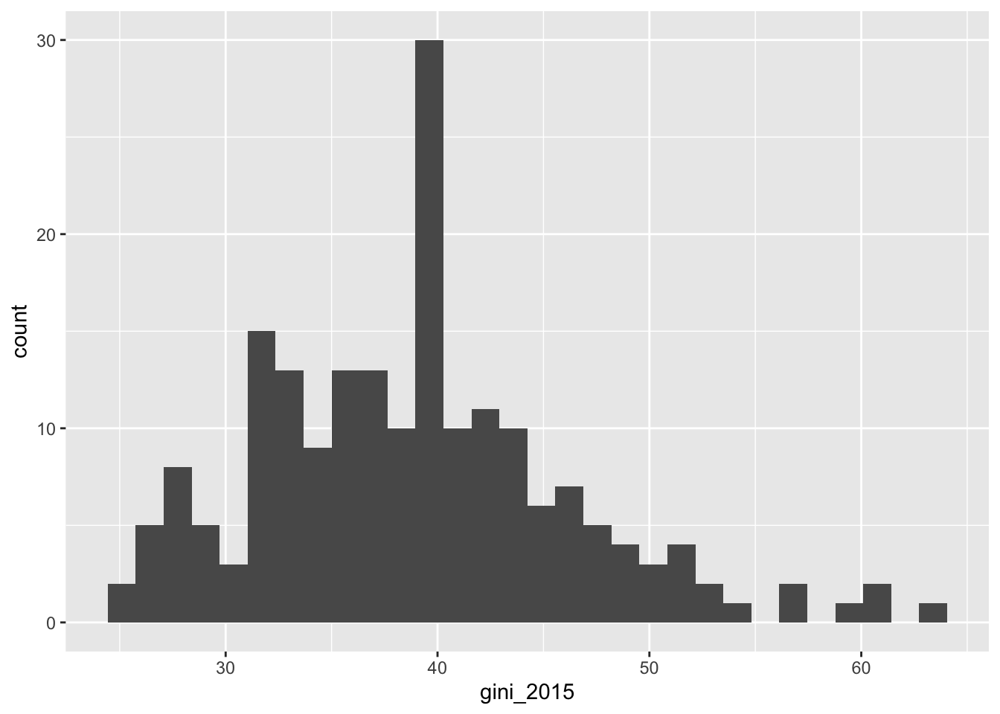

library(dplyr)
library(ggplot2)
library(magrittr)
library(readr)
library(readxl)
library(stringr)
library(tidyr)8 Data Management
In this chapter, we will go through the R functions needed for data management. The built-in R functions are useful tools and it is important to know their syntax. There are several packages that are widely used that are helpful to work with larger data, produce cleaner code, and be more efficient in data management. The suite of packages called tidyverse is especially common.
Here are all the libraries you should install for this chapter. Most of these are packages in tidyverse.
We will practice with imported data. Go to Canvas > Modules > Module 1 > Data for the example data. Download the entire folder Gapminder to a convenient file on your computer and save the file path for use in the below notes. Make sure that you have the folder unzipped and the correct path to the folder.
8.1 Built-in Functions
8.1.1 Select Variables
df <- read.csv("Data/Gapminder/gapminder_large.csv")
str(df)'data.frame': 195 obs. of 21 variables:
$ country : chr "Afghanistan" "Albania" "Algeria" "Andorra" ...
$ gdp_2015 : int 574 4520 4780 42100 3750 13300 10600 3920 55100 47800 ...
$ gini_2015 : num 36.8 29 27.6 40 42.6 40 41.8 31.9 32.3 30.6 ...
$ region : chr "Asia & Pacific" "Europe" "Arab States" "Europe" ...
$ co2_2015 : num 0.262 1.6 3.8 5.97 1.22 5.84 4.64 1.65 16.8 7.7 ...
$ co2_2016 : num 0.245 1.57 3.64 6.07 1.18 5.9 4.6 1.76 17 7.7 ...
$ co2_2017 : num 0.247 1.61 3.56 6.27 1.14 5.89 4.55 1.7 17 7.94 ...
$ co2_2018 : num 0.254 1.59 3.69 6.12 1.12 5.88 4.41 1.89 16.9 7.75 ...
$ cpi_2012 : int 8 33 34 NA 22 NA 35 34 85 69 ...
$ cpi_2013 : int 8 31 36 NA 23 NA 34 36 81 69 ...
$ cpi_2014 : int 12 33 36 NA 19 NA 34 37 80 72 ...
$ cpi_2015 : int 11 36 36 NA 15 NA 32 35 79 76 ...
$ cpi_2016 : int 15 39 34 NA 18 NA 36 33 79 75 ...
$ cpi_2017 : int 15 38 33 NA 19 NA 39 35 77 75 ...
$ lifeexp_2012: num 60.8 77.8 76.8 82.4 61.3 76.7 76 74.7 82.5 81 ...
$ lifeexp_2013: num 61.3 77.9 76.9 82.5 61.9 76.8 76.1 75.2 82.6 81.2 ...
$ lifeexp_2014: num 61.2 77.9 77 82.5 62.8 76.8 76.4 75.3 82.5 81.4 ...
$ lifeexp_2015: num 61.2 78 77.1 82.6 63.3 76.9 76.5 75.3 82.5 81.5 ...
$ lifeexp_2016: num 61.2 78.1 77.4 82.7 63.8 77 76.5 75.4 82.5 81.7 ...
$ lifeexp_2017: num 63.4 78.2 77.7 82.7 64.2 77 76.7 75.6 82.4 81.8 ...
$ lifeexp_2018: num 63.7 78.3 77.9 NA 64.6 77.2 76.8 75.8 82.5 81.9 ...Take a moment to look at the data in the data viewer. It is useful to consider the following questions whenever loading data:
- How many rows and columns are there?
- What type of observation (e.g., countries, people, firms, households) do the rows represent? Another way to say this is: what is the unit of observation?
- Are the names of the variables convenient?
The built-in functions import data as data frames. Chapter 2 discusses how to select variables (columns). Here is a small review.
df[, 1:3]
df[, c(2, 4)]
df[, "cpi_2017"]
df[, c("lifeexp_2012", "cpi_2016")]
df[c("country", "region")]
df[1:3]
df$gini_20158.1.2 Rename and Create Variables
The names of a data frame can be access with names(). This is an attribute of the data frame and can be used to rename all the variables this way.
names(df) [1] "country" "gdp_2015" "gini_2015" "region" "co2_2015"
[6] "co2_2016" "co2_2017" "co2_2018" "cpi_2012" "cpi_2013"
[11] "cpi_2014" "cpi_2015" "cpi_2016" "cpi_2017" "lifeexp_2012"
[16] "lifeexp_2013" "lifeexp_2014" "lifeexp_2015" "lifeexp_2016" "lifeexp_2017"
[21] "lifeexp_2018"names(df) <- paste0("var", 1:length(names(df)))
names(df) [1] "var1" "var2" "var3" "var4" "var5" "var6" "var7" "var8" "var9"
[10] "var10" "var11" "var12" "var13" "var14" "var15" "var16" "var17" "var18"
[19] "var19" "var20" "var21"An alternative is to use the function setNames(). This function can also be used for other data structures besides data frames, such as vectors.
vnames <- c("country", "gdp_2015", "gini_2015", "region",
"co2_2015", "co2_2016", "co2_2017", "co2_2018",
"cpi_2012", "cpi_2013", "cpi_2014", "cpi_2015",
"cpi_2016", "cpi_2017", "lifeexp_2012", "lifeexp_2013",
"lifeexp_2014", "lifeexp_2015", "lifeexp_2016", "lifeexp_2017",
"lifeexp_2018")
df <- setNames(df, vnames)
names(df) [1] "country" "gdp_2015" "gini_2015" "region" "co2_2015"
[6] "co2_2016" "co2_2017" "co2_2018" "cpi_2012" "cpi_2013"
[11] "cpi_2014" "cpi_2015" "cpi_2016" "cpi_2017" "lifeexp_2012"
[16] "lifeexp_2013" "lifeexp_2014" "lifeexp_2015" "lifeexp_2016" "lifeexp_2017"
[21] "lifeexp_2018"It is also possible to rename a subset of the variables.
names(df)[1] <- "COUNTRY"
names(df) [1] "COUNTRY" "gdp_2015" "gini_2015" "region" "co2_2015"
[6] "co2_2016" "co2_2017" "co2_2018" "cpi_2012" "cpi_2013"
[11] "cpi_2014" "cpi_2015" "cpi_2016" "cpi_2017" "lifeexp_2012"
[16] "lifeexp_2013" "lifeexp_2014" "lifeexp_2015" "lifeexp_2016" "lifeexp_2017"
[21] "lifeexp_2018"names(df)[2:3] <- c("GDP", "GINI")
names(df) [1] "COUNTRY" "GDP" "GINI" "region" "co2_2015"
[6] "co2_2016" "co2_2017" "co2_2018" "cpi_2012" "cpi_2013"
[11] "cpi_2014" "cpi_2015" "cpi_2016" "cpi_2017" "lifeexp_2012"
[16] "lifeexp_2013" "lifeexp_2014" "lifeexp_2015" "lifeexp_2016" "lifeexp_2017"
[21] "lifeexp_2018"Creating new variables can be done with cbind() as discussed in chapter 2.
random1 <- rnorm(dim(df)[1])
head(random1)[1] 1.0554011 -1.4637454 -0.5282606 1.5977476 -0.9002189 0.2934467df <- cbind(df, random1)
df[1:5, c("COUNTRY", "random1")] COUNTRY random1
1 Afghanistan 1.0554011
2 Albania -1.4637454
3 Algeria -0.5282606
4 Andorra 1.5977476
5 Angola -0.9002189This method has the advantage that it can be used to add more than one variable at a time.
random2 <- runif(dim(df)[1])
random3 <- rexp(dim(df)[1])
df <- cbind(df, random2, random3)
df[1:5, c("COUNTRY", "random2", "random3")] COUNTRY random2 random3
1 Afghanistan 0.54912043 0.3842395
2 Albania 0.80180192 2.0000175
3 Algeria 0.66452378 0.6596464
4 Andorra 0.07791196 0.9120150
5 Angola 0.23502908 0.4231180The following shortcut is helpful to create one variable at a time.
df$random4 <- df$random3^2
df[1:5, c("COUNTRY", "random4")] COUNTRY random4
1 Afghanistan 0.1476400
2 Albania 4.0000700
3 Algeria 0.4351334
4 Andorra 0.8317714
5 Angola 0.17902888.1.3 Filter Observations
Filtering observations can be done by row name or number, as shown in chapter 2.
df[1:3, ]
df[c(3, 40), ]
df[c("4", "17"), ]
df[!c(1:190), ]
df[-c(1:190), ]Filtering can also be done using logical statements.
df[df$random2 >= 1, ] [1] COUNTRY GDP GINI region co2_2015
[6] co2_2016 co2_2017 co2_2018 cpi_2012 cpi_2013
[11] cpi_2014 cpi_2015 cpi_2016 cpi_2017 lifeexp_2012
[16] lifeexp_2013 lifeexp_2014 lifeexp_2015 lifeexp_2016 lifeexp_2017
[21] lifeexp_2018 random1 random2 random3 random4
<0 rows> (or 0-length row.names)df[df$random2 >= 1 & df$random3 <= 0.5, ] [1] COUNTRY GDP GINI region co2_2015
[6] co2_2016 co2_2017 co2_2018 cpi_2012 cpi_2013
[11] cpi_2014 cpi_2015 cpi_2016 cpi_2017 lifeexp_2012
[16] lifeexp_2013 lifeexp_2014 lifeexp_2015 lifeexp_2016 lifeexp_2017
[21] lifeexp_2018 random1 random2 random3 random4
<0 rows> (or 0-length row.names)subset(df, df$random3 <= 0.05)[, c("COUNTRY", "random3")] COUNTRY random3
65 Germany 0.008742552
72 Guyana 0.048876320
73 Haiti 0.001249049
74 Honduras 0.029414866
147 Saudi Arabia 0.026581063
179 Uganda 0.027493716The which() function returns the row numbers that are being filtered.
which(df$random3 <= 0.05)[1] 65 72 73 74 147 1798.1.4 Organize
Sorting can be done by one or more columns. Note that even though the rows are re-ordered, the original row names remain.
dforder1 <- order(df$GINI)
head(df[dforder1, c("COUNTRY", "GINI")]) COUNTRY GINI
180 Ukraine 24.8
154 Slovenia 25.6
46 Czech Republic 26.0
153 Slovak Republic 26.7
16 Belarus 26.9
87 Kazakhstan 26.9dforder2 <- order(df$region, df$GINI)
head(df[dforder2, c("COUNTRY", "region", "GINI")]) COUNTRY region GINI
146 Sao Tome and Principe Africa 30.8
105 Mali Africa 33.0
96 Liberia Africa 33.3
70 Guinea Africa 33.7
151 Sierra Leone Africa 34.0
125 Niger Africa 34.18.2 tidyverse Functions
Hadley Wickham developed the idea behind a suite of packages that streamline data work called tidyverse. There are many packages in this suite that relate to different types of datasets and parts of the data process. This chapter goes through dplyr, tidyr, and readr.
8.2.1 Import and Export: readr
The functions in the readr package to read and write data are faster than the built-in functions. Apart from efficiency, they have another advantage in that they help ensure consistency in the imported data. For example, if there are spaces in the variable name, read.csv(), the built-in function, will automatically remove these. The readr function read_csv() will not remove them.
tib1 <- read_csv("Data/Gapminder/gapminder.csv")Rows: 197 Columns: 4
── Column specification ────────────────────────────────────────────────────────
Delimiter: ","
chr (2): country, region
dbl (2): gdp, gini
ℹ Use `spec()` to retrieve the full column specification for this data.
ℹ Specify the column types or set `show_col_types = FALSE` to quiet this message.str(tib1)spc_tbl_ [197 × 4] (S3: spec_tbl_df/tbl_df/tbl/data.frame)
$ country: chr [1:197] "Afghanistan" "Albania" "Algeria" "Andorra" ...
$ gdp : num [1:197] 574 4520 4780 42100 3750 13300 10600 3920 55100 47800 ...
$ gini : num [1:197] 36.8 29 27.6 40 42.6 40 41.8 31.9 32.3 30.6 ...
$ region : chr [1:197] "Asia & Pacific" "Europe" "Arab States" "Europe" ...
- attr(*, "spec")=
.. cols(
.. country = col_character(),
.. gdp = col_double(),
.. gini = col_double(),
.. region = col_character()
.. )
- attr(*, "problems")=<externalptr> Immediately, you can see that the data structure is different. The package readr, and all the packages in the tidyverse suite, rely on a data structure called tibbles instead of data frames. The two main differences between tibbles and data frames are the following. More information on the differences is available here.
Unlike data frames, tibbles only show the first 10 rows and enough columns to fit on the screen. Each column is printed with its type.
When subsetting,
[]always returns another tibble and[[]]always returns a vector.
Just like in read.csv(), you can specify the columns.
tib2 <- read_csv("Data/Gapminder/gapminder.csv",
col_types = list(col_character(),
col_integer(),
col_double(),
col_factor()))
str(tib2)spc_tbl_ [197 × 4] (S3: spec_tbl_df/tbl_df/tbl/data.frame)
$ country: chr [1:197] "Afghanistan" "Albania" "Algeria" "Andorra" ...
$ gdp : int [1:197] 574 4520 4780 42100 3750 13300 10600 3920 55100 47800 ...
$ gini : num [1:197] 36.8 29 27.6 40 42.6 40 41.8 31.9 32.3 30.6 ...
$ region : Factor w/ 7 levels "Asia & Pacific",..: 1 2 3 2 4 5 5 2 1 2 ...
- attr(*, "spec")=
.. cols(
.. country = col_character(),
.. gdp = col_integer(),
.. gini = col_double(),
.. region = col_factor(levels = NULL, ordered = FALSE, include_na = FALSE)
.. )
- attr(*, "problems")=<externalptr> If you want to completely rename the columns, you can do so with the option col_names. You will just need to tell R to skip reading in the first line of the file.
tib3 <- read_csv("Data/Gapminder/gapminder.csv", skip = 1,
col_names = c("V1", "V2", "V3", "V4"))Rows: 197 Columns: 4
── Column specification ────────────────────────────────────────────────────────
Delimiter: ","
chr (2): V1, V4
dbl (2): V2, V3
ℹ Use `spec()` to retrieve the full column specification for this data.
ℹ Specify the column types or set `show_col_types = FALSE` to quiet this message.str(tib3)spc_tbl_ [197 × 4] (S3: spec_tbl_df/tbl_df/tbl/data.frame)
$ V1: chr [1:197] "Afghanistan" "Albania" "Algeria" "Andorra" ...
$ V2: num [1:197] 574 4520 4780 42100 3750 13300 10600 3920 55100 47800 ...
$ V3: num [1:197] 36.8 29 27.6 40 42.6 40 41.8 31.9 32.3 30.6 ...
$ V4: chr [1:197] "Asia & Pacific" "Europe" "Arab States" "Europe" ...
- attr(*, "spec")=
.. cols(
.. V1 = col_character(),
.. V2 = col_double(),
.. V3 = col_double(),
.. V4 = col_character()
.. )
- attr(*, "problems")=<externalptr> The argument n_max determines the maximum number of lines that are read.
read_csv("Data/Gapminder/gapminder.csv", n_max = 3)Rows: 3 Columns: 4
── Column specification ────────────────────────────────────────────────────────
Delimiter: ","
chr (2): country, region
dbl (2): gdp, gini
ℹ Use `spec()` to retrieve the full column specification for this data.
ℹ Specify the column types or set `show_col_types = FALSE` to quiet this message.# A tibble: 3 × 4
country gdp gini region
<chr> <dbl> <dbl> <chr>
1 Afghanistan 574 36.8 Asia & Pacific
2 Albania 4520 29 Europe
3 Algeria 4780 27.6 Arab States The readr analogues to read.table() and read.delim() are read_table() and read_delim(). They have similar arguments as read_csv(). Reading in data files usually presents unexpected difficulties and complications, and the myriad of arguments available can help address any formatting issues automatically.
The write functions in readr are faster than the built-in functions and automatically omit row names.
write_csv(df, file = "Data/Gapminder/Output_Data/df_csv_readr.csv")8.2.1.1 Practice Exercises
- Another way to list the column types is string shortcuts. For example
"d"for double,"c"for character, etc. Check the documentation forread_csv(), and call in"gapminder.csv"with a character column, an integer column, a double column, and a factor column. - You can also easily skip columns with this shorthand. Why do you think this be useful? Call in
"gapminder.csv"again skipping theRegioncolumn.
8.2.2 Transform: dplyr
The package dplyr includes functions that transform tibbles and data frames.
df <- read_csv("Data/Gapminder/gapminder.csv")Rows: 197 Columns: 4
── Column specification ────────────────────────────────────────────────────────
Delimiter: ","
chr (2): country, region
dbl (2): gdp, gini
ℹ Use `spec()` to retrieve the full column specification for this data.
ℹ Specify the column types or set `show_col_types = FALSE` to quiet this message.head(df)# A tibble: 6 × 4
country gdp gini region
<chr> <dbl> <dbl> <chr>
1 Afghanistan 574 36.8 Asia & Pacific
2 Albania 4520 29 Europe
3 Algeria 4780 27.6 Arab States
4 Andorra 42100 40 Europe
5 Angola 3750 42.6 Africa
6 Antigua and Barbuda 13300 40 South/Latin America8.2.2.1 Select Variables
The general form of functions in dplyr involves identifying the data frame first and then specifying the options. To demonstrate, the function select chooses which variables.
select(tib1, country)# A tibble: 197 × 1
country
<chr>
1 Afghanistan
2 Albania
3 Algeria
4 Andorra
5 Angola
6 Antigua and Barbuda
7 Argentina
8 Armenia
9 Australia
10 Austria
# ℹ 187 more rowsNote that the original data frame is not changed. You will have to assign an object if you want to save this selection in an object.
head(tib1)# A tibble: 6 × 4
country gdp gini region
<chr> <dbl> <dbl> <chr>
1 Afghanistan 574 36.8 Asia & Pacific
2 Albania 4520 29 Europe
3 Algeria 4780 27.6 Arab States
4 Andorra 42100 40 Europe
5 Angola 3750 42.6 Africa
6 Antigua and Barbuda 13300 40 South/Latin AmericaThere are several ways to select more than one variable. The last method used a helper, starts_with(). See the documentation for select for other helpers.
select(tib1, country, gdp)
select(tib1, gdp:gini)
select(tib1, -gdp)
select(tib1, -c(country, gini))
select(tib1, starts_with("g"))Sometimes it is desirable to rename variables when selecting them. This is very convenient in select!
select(tib1, country_name = country)# A tibble: 197 × 1
country_name
<chr>
1 Afghanistan
2 Albania
3 Algeria
4 Andorra
5 Angola
6 Antigua and Barbuda
7 Argentina
8 Armenia
9 Australia
10 Austria
# ℹ 187 more rowsselect(tib1, var = starts_with("g"))# A tibble: 197 × 2
var1 var2
<dbl> <dbl>
1 574 36.8
2 4520 29
3 4780 27.6
4 42100 40
5 3750 42.6
6 13300 40
7 10600 41.8
8 3920 31.9
9 55100 32.3
10 47800 30.6
# ℹ 187 more rows8.2.2.2 Rename and Create Variables
If you want to rename variables without dropping any, use the function rename.
rename(tib1, country_name = country)# A tibble: 197 × 4
country_name gdp gini region
<chr> <dbl> <dbl> <chr>
1 Afghanistan 574 36.8 Asia & Pacific
2 Albania 4520 29 Europe
3 Algeria 4780 27.6 Arab States
4 Andorra 42100 40 Europe
5 Angola 3750 42.6 Africa
6 Antigua and Barbuda 13300 40 South/Latin America
7 Argentina 10600 41.8 South/Latin America
8 Armenia 3920 31.9 Europe
9 Australia 55100 32.3 Asia & Pacific
10 Austria 47800 30.6 Europe
# ℹ 187 more rowsrename(tib1, country_name = country, gdp_percapita = gdp)# A tibble: 197 × 4
country_name gdp_percapita gini region
<chr> <dbl> <dbl> <chr>
1 Afghanistan 574 36.8 Asia & Pacific
2 Albania 4520 29 Europe
3 Algeria 4780 27.6 Arab States
4 Andorra 42100 40 Europe
5 Angola 3750 42.6 Africa
6 Antigua and Barbuda 13300 40 South/Latin America
7 Argentina 10600 41.8 South/Latin America
8 Armenia 3920 31.9 Europe
9 Australia 55100 32.3 Asia & Pacific
10 Austria 47800 30.6 Europe
# ℹ 187 more rowsThe function mutate() allows for new variables to be added to the data frame or existing variables to be modified without changing the other variables.
mutate(tib1, gdp_sq = gdp^2)# A tibble: 197 × 5
country gdp gini region gdp_sq
<chr> <dbl> <dbl> <chr> <dbl>
1 Afghanistan 574 36.8 Asia & Pacific 329476
2 Albania 4520 29 Europe 20430400
3 Algeria 4780 27.6 Arab States 22848400
4 Andorra 42100 40 Europe 1772410000
5 Angola 3750 42.6 Africa 14062500
6 Antigua and Barbuda 13300 40 South/Latin America 176890000
7 Argentina 10600 41.8 South/Latin America 112360000
8 Armenia 3920 31.9 Europe 15366400
9 Australia 55100 32.3 Asia & Pacific 3036010000
10 Austria 47800 30.6 Europe 2284840000
# ℹ 187 more rowsmutate(tib1, row_id = 1:length(country))# A tibble: 197 × 5
country gdp gini region row_id
<chr> <dbl> <dbl> <chr> <int>
1 Afghanistan 574 36.8 Asia & Pacific 1
2 Albania 4520 29 Europe 2
3 Algeria 4780 27.6 Arab States 3
4 Andorra 42100 40 Europe 4
5 Angola 3750 42.6 Africa 5
6 Antigua and Barbuda 13300 40 South/Latin America 6
7 Argentina 10600 41.8 South/Latin America 7
8 Armenia 3920 31.9 Europe 8
9 Australia 55100 32.3 Asia & Pacific 9
10 Austria 47800 30.6 Europe 10
# ℹ 187 more rowsmutate(tib1, gdp_large = ifelse(gdp >= 25000, TRUE, FALSE))# A tibble: 197 × 5
country gdp gini region gdp_large
<chr> <dbl> <dbl> <chr> <lgl>
1 Afghanistan 574 36.8 Asia & Pacific FALSE
2 Albania 4520 29 Europe FALSE
3 Algeria 4780 27.6 Arab States FALSE
4 Andorra 42100 40 Europe TRUE
5 Angola 3750 42.6 Africa FALSE
6 Antigua and Barbuda 13300 40 South/Latin America FALSE
7 Argentina 10600 41.8 South/Latin America FALSE
8 Armenia 3920 31.9 Europe FALSE
9 Australia 55100 32.3 Asia & Pacific TRUE
10 Austria 47800 30.6 Europe TRUE
# ℹ 187 more rowsIf you want to create a new variable and drop the other variables, use the function transmute().
transmute(tib1, gini_small = ifelse(gini <= 40, TRUE, FALSE))# A tibble: 197 × 1
gini_small
<lgl>
1 TRUE
2 TRUE
3 TRUE
4 TRUE
5 FALSE
6 TRUE
7 FALSE
8 TRUE
9 TRUE
10 TRUE
# ℹ 187 more rows8.2.2.3 Filter Observations
The function select allows you to choose which variables (columns) are included in your data. The function filter allows you choose which observations (rows) are included in your data.
filter(tib1, region == "North America")# A tibble: 2 × 4
country gdp gini region
<chr> <dbl> <dbl> <chr>
1 Canada 50300 31.7 North America
2 United States 52100 41.3 North Americafilter(tib1, is.na(gdp))# A tibble: 8 × 4
country gdp gini region
<chr> <dbl> <dbl> <chr>
1 Djibouti NA 44.1 Arab States
2 Eritrea NA 40 Africa
3 Liechtenstein NA 40 Europe
4 Venezuela NA 46.9 South/Latin America
5 Holy See NA 40 Europe
6 North Korea NA 37 Asia & Pacific
7 Somalia NA 48 Arab States
8 Syria NA 35.2 Asia & Pacific filter(tib1, gdp > 25000 & region != "Europe")# A tibble: 12 × 4
country gdp gini region
<chr> <dbl> <dbl> <chr>
1 Australia 55100 32.3 Asia & Pacific
2 Bahamas 27500 43.7 South/Latin America
3 Brunei 32900 40 Asia & Pacific
4 Canada 50300 31.7 North America
5 Japan 47100 32.1 Asia & Pacific
6 Kuwait 36000 40 Middle east
7 New Zealand 36800 34.5 Asia & Pacific
8 Qatar 65100 40 Middle east
9 Singapore 54000 40.9 Asia & Pacific
10 South Korea 26100 31.6 Asia & Pacific
11 United Arab Emirates 40200 40 Middle east
12 United States 52100 41.3 North America filter(tib1, region %in% c("North America", "Middle east"))# A tibble: 14 × 4
country gdp gini region
<chr> <dbl> <dbl> <chr>
1 Canada 50300 31.7 North America
2 Egypt 2700 31.2 Middle east
3 Iran 6070 38.5 Middle east
4 Iraq 5300 29.5 Middle east
5 Jordan 3310 33.7 Middle east
6 Kuwait 36000 40 Middle east
7 Lebanon 6490 31.8 Middle east
8 Libya 5900 40 Middle east
9 Oman 16200 40 Middle east
10 Qatar 65100 40 Middle east
11 Saudi Arabia 21400 40 Middle east
12 United Arab Emirates 40200 40 Middle east
13 United States 52100 41.3 North America
14 Yemen 785 36.7 Middle east To select rows based on the number index, use slice.
slice(tib1, 32:37)# A tibble: 6 × 4
country gdp gini region
<chr> <dbl> <dbl> <chr>
1 Cape Verde 3410 47.2 Africa
2 Central African Republic 347 56.2 Africa
3 Chad 957 43.3 Africa
4 Chile 14700 47.5 South/Latin America
5 China 6500 39.4 Asia & Pacific
6 Colombia 7580 51.7 South/Latin AmericaThe function distinct() filters out duplicated rows.
distinct(tib1)# A tibble: 195 × 4
country gdp gini region
<chr> <dbl> <dbl> <chr>
1 Afghanistan 574 36.8 Asia & Pacific
2 Albania 4520 29 Europe
3 Algeria 4780 27.6 Arab States
4 Andorra 42100 40 Europe
5 Angola 3750 42.6 Africa
6 Antigua and Barbuda 13300 40 South/Latin America
7 Argentina 10600 41.8 South/Latin America
8 Armenia 3920 31.9 Europe
9 Australia 55100 32.3 Asia & Pacific
10 Austria 47800 30.6 Europe
# ℹ 185 more rowsfilter(tib1, duplicated(tib1)) # Check which observations are duplicated# A tibble: 2 × 4
country gdp gini region
<chr> <dbl> <dbl> <chr>
1 Norway 90000 27.1 Europe
2 Suriname 8460 61 South/Latin AmericaThe function slice_sample() randomly selects rows.
slice_sample(tib1, n = 4)# A tibble: 4 × 4
country gdp gini region
<chr> <dbl> <dbl> <chr>
1 United Arab Emirates 40200 40 Middle east
2 Maldives 7500 38.4 Asia & Pacific
3 Poland 14600 31.7 Europe
4 Suriname 8460 61 South/Latin Americaslice_sample(tib1, prop = 0.03)# A tibble: 5 × 4
country gdp gini region
<chr> <dbl> <dbl> <chr>
1 Luxembourg 108000 32.9 Europe
2 Namibia 6270 59.5 Africa
3 Albania 4520 29 Europe
4 Russia 11400 38.8 Europe
5 Romania 9710 32.1 Europe8.2.2.4 Organize
The functions so far produce data frames that explicitly differ from the inputted data frame. There are some silent functions that change the underlying structure without changing the outputted data frame. The function group_by() is an example of these silent functions. It groups the data based on the values of a set of variables. It makes most sense to group by categorical variables. The only difference is that now it says Groups: region [7].
group_tib1 <- group_by(tib1, region)
group_tib1# A tibble: 197 × 4
# Groups: region [7]
country gdp gini region
<chr> <dbl> <dbl> <chr>
1 Afghanistan 574 36.8 Asia & Pacific
2 Albania 4520 29 Europe
3 Algeria 4780 27.6 Arab States
4 Andorra 42100 40 Europe
5 Angola 3750 42.6 Africa
6 Antigua and Barbuda 13300 40 South/Latin America
7 Argentina 10600 41.8 South/Latin America
8 Armenia 3920 31.9 Europe
9 Australia 55100 32.3 Asia & Pacific
10 Austria 47800 30.6 Europe
# ℹ 187 more rowsUngrouping the data is another silent function and it removes this underlying grouping.
ungroup(group_tib1)# A tibble: 197 × 4
country gdp gini region
<chr> <dbl> <dbl> <chr>
1 Afghanistan 574 36.8 Asia & Pacific
2 Albania 4520 29 Europe
3 Algeria 4780 27.6 Arab States
4 Andorra 42100 40 Europe
5 Angola 3750 42.6 Africa
6 Antigua and Barbuda 13300 40 South/Latin America
7 Argentina 10600 41.8 South/Latin America
8 Armenia 3920 31.9 Europe
9 Australia 55100 32.3 Asia & Pacific
10 Austria 47800 30.6 Europe
# ℹ 187 more rowsThe function arrange sorts the data based on the rank order of a set of variables. Adding desc() changes the rank-order to descending.
arrange(tib1, gini)# A tibble: 197 × 4
country gdp gini region
<chr> <dbl> <dbl> <chr>
1 Ukraine 2830 24.8 Europe
2 Slovenia 23800 25.6 Europe
3 Czech Republic 21400 26 Europe
4 Slovak Republic 18900 26.7 Europe
5 Belarus 6380 26.9 Europe
6 Kazakhstan 10600 26.9 Asia & Pacific
7 Moldova 2950 27 Europe
8 Finland 45600 27.1 Europe
9 Norway 90000 27.1 Europe
10 Norway 90000 27.1 Europe
# ℹ 187 more rowsarrange(tib1, desc(region), gini)# A tibble: 197 × 4
country gdp gini region
<chr> <dbl> <dbl> <chr>
1 Antigua and Barbuda 13300 40 South/Latin America
2 Dominica 6890 40 South/Latin America
3 Grenada 8190 40 South/Latin America
4 St. Kitts and Nevis 16700 40 South/Latin America
5 St. Vincent and the Grenadines 6580 40 South/Latin America
6 Uruguay 13900 40.1 South/Latin America
7 El Salvador 3310 41.1 South/Latin America
8 Trinidad and Tobago 16800 41.3 South/Latin America
9 Argentina 10600 41.8 South/Latin America
10 St. Lucia 8490 42.6 South/Latin America
# ℹ 187 more rows8.2.2.5 Practice Exercises
- Before running this code, what do you think the output will be? Check to see if you were right!
anti_join(popA, tib1, by = "country")8.3 Pipes
The magrittr package contains the pipe operator, %>%. The purpose of this operator is to make code clearer and more efficient. The idea is to minimize unnecessary saved objects. For example, if you are cleaning a dataset, it would be cumbersome to save a new data frame for each step in the cleaning process. Pipe operators, or pipes, help with this.
The idea is that the pipe forwards a value to the next function. The two lines result in the same output. The first argument of filter() is forwarded by the pipe operator.
filter(tib1, region == "North America")# A tibble: 2 × 4
country gdp gini region
<chr> <dbl> <dbl> <chr>
1 Canada 50300 31.7 North America
2 United States 52100 41.3 North Americatib1 %>% filter(region == "North America")# A tibble: 2 × 4
country gdp gini region
<chr> <dbl> <dbl> <chr>
1 Canada 50300 31.7 North America
2 United States 52100 41.3 North AmericaPipe operators are especially useful when there are several operations being applied to the same object.
Rows: 195 Columns: 2
── Column specification ────────────────────────────────────────────────────────
Delimiter: ","
chr (1): country
dbl (1): population
ℹ Use `spec()` to retrieve the full column specification for this data.
ℹ Specify the column types or set `show_col_types = FALSE` to quiet this message.
Rows: 11 Columns: 2
── Column specification ────────────────────────────────────────────────────────
Delimiter: ","
chr (1): country
dbl (1): population
ℹ Use `spec()` to retrieve the full column specification for this data.
ℹ Specify the column types or set `show_col_types = FALSE` to quiet this message.tib1 %>%
distinct() %>%
full_join(pop, by = "country") %>%
arrange(desc(region), desc(population)) %>%
head()# A tibble: 6 × 5
country gdp gini region population
<chr> <dbl> <dbl> <chr> <dbl>
1 Brazil 11400 51.6 South/Latin America 204000000
2 Mexico 10000 46.5 South/Latin America 122000000
3 Colombia 7580 51.7 South/Latin America 47500000
4 Argentina 10600 41.8 South/Latin America 43100000
5 Peru 6110 43.7 South/Latin America 30500000
6 Venezuela NA 46.9 South/Latin America 30100000To highlight the utility of pipe operators, consider these alternatives. They produce the same results. The first approach results in two objects that are not necessary for the final analysis, tmp1 and tmp2. These objects are created with the sole purpose of being used in other functions. If the dataset is large, saving different versions of it can be burdensome. Additionally, the workspace becomes messy with so many temporary objects. While the second approach avoids temporary versions, it is difficult to read and understand.
tmp1 <- distinct(tib1)
tmp2 <- full_join(tmp1, pop, by = "country")
df <- arrange(tmp2, desc(region), desc(population))
head(df)# A tibble: 6 × 5
country gdp gini region population
<chr> <dbl> <dbl> <chr> <dbl>
1 Brazil 11400 51.6 South/Latin America 204000000
2 Mexico 10000 46.5 South/Latin America 122000000
3 Colombia 7580 51.7 South/Latin America 47500000
4 Argentina 10600 41.8 South/Latin America 43100000
5 Peru 6110 43.7 South/Latin America 30500000
6 Venezuela NA 46.9 South/Latin America 30100000head(arrange(distinct(full_join(tib1, pop, by = "country")), desc(region), desc(population)))# A tibble: 6 × 5
country gdp gini region population
<chr> <dbl> <dbl> <chr> <dbl>
1 Brazil 11400 51.6 South/Latin America 204000000
2 Mexico 10000 46.5 South/Latin America 122000000
3 Colombia 7580 51.7 South/Latin America 47500000
4 Argentina 10600 41.8 South/Latin America 43100000
5 Peru 6110 43.7 South/Latin America 30500000
6 Venezuela NA 46.9 South/Latin America 30100000Note that the pipe operator can be used with functions outside of the tidyverse functions.
full_join(df, pop, by = "country") %>%
write.csv("Data/Gapminder/Output_Data/country_info.csv")Pipe operators can forward objects to other arguments besides the first one. A period (.) indicates this. Here is an example with plotting (see chapter 7).
Rows: 195 Columns: 21
── Column specification ────────────────────────────────────────────────────────
Delimiter: ","
chr (2): country, region
dbl (19): gdp_2015, gini_2015, co2_2015, co2_2016, co2_2017, co2_2018, cpi_2...
ℹ Use `spec()` to retrieve the full column specification for this data.
ℹ Specify the column types or set `show_col_types = FALSE` to quiet this message.# A tibble: 6 × 21
country gdp_2015 gini_2015 region co2_2015 co2_2016 co2_2017 co2_2018 cpi_2012
<chr> <dbl> <dbl> <chr> <dbl> <dbl> <dbl> <dbl> <dbl>
1 Afghan… 574 36.8 Asia … 0.262 0.245 0.247 0.254 8
2 Albania 4520 29 Europe 1.6 1.57 1.61 1.59 33
3 Algeria 4780 27.6 Arab … 3.8 3.64 3.56 3.69 34
4 Andorra 42100 40 Europe 5.97 6.07 6.27 6.12 NA
5 Angola 3750 42.6 Africa 1.22 1.18 1.14 1.12 22
6 Antigu… 13300 40 South… 5.84 5.9 5.89 5.88 NA
# ℹ 12 more variables: cpi_2013 <dbl>, cpi_2014 <dbl>, cpi_2015 <dbl>,
# cpi_2016 <dbl>, cpi_2017 <dbl>, lifeexp_2012 <dbl>, lifeexp_2013 <dbl>,
# lifeexp_2014 <dbl>, lifeexp_2015 <dbl>, lifeexp_2016 <dbl>,
# lifeexp_2017 <dbl>, lifeexp_2018 <dbl>tib1 %>%
distinct() %>%
full_join(pop, by = "country") %>%
ggplot(aes(x = gini_2015), data = .) + geom_histogram(stat = "bin")`stat_bin()` using `bins = 30`. Pick better value with `binwidth`.
Getting comfortable with %>% can vastly smooth your workflow in R. Another useful pipe is %<>% which functions the same as %>% but also assigns the object (it is called the assginment pipe). These two lines of code result in the same tibble.
tib1 <- tib1 %>%
mutate(id = 1:n())
tib1 %<>%
mutate(id = 1:n())8.3.1 Practice Exercises
- Use pipes to accomplish the following tasks on
tib1: selectcountry,region,co2_2015, andco2_2016, remove rows with missing values for either CO2 variables, create a variable that isTRUEwhen CO2 emissions in 2016 are smaller than those in 2015, and only keep the rows where this variable isTRUE. - If you are curious, look at the documentation for
?magrittr. There are four types of pipes. Take a moment to familiarize yourself with their differences.
8.4 Further Reading
There are many great resources online, including cheat sheets. Here is one for dplyr. Save this cheat sheet if you find it useful! More cheat sheets can be found here.
The above information comes from chapters 5.1-5.3, 6, and 21 of Boehmke (2016), chapters 2.2.5 and 3 of Zamora Saiz et al. (2020). See Zamora Saiz et al. (2020) chapter 3 for information on data.table.
8.4.1 References
Boehmke, Bradley C. 2016. Data Wrangling with R. Use R! Springer. https://link.springer.com/book/10.1007/978-3-319-45599-0.
Zamora Saiz, Alfonso, Carlos Quesada González, Lluís Hurtado Gil, and Diego Mondéjar Ruiz. 2020. An Introduction to Data Analysis in R: Hands-on Coding, Data Mining, Visualization and Statistics from Scratch. https://link.springer.com/book/10.1007/978-3-030-48997-7.